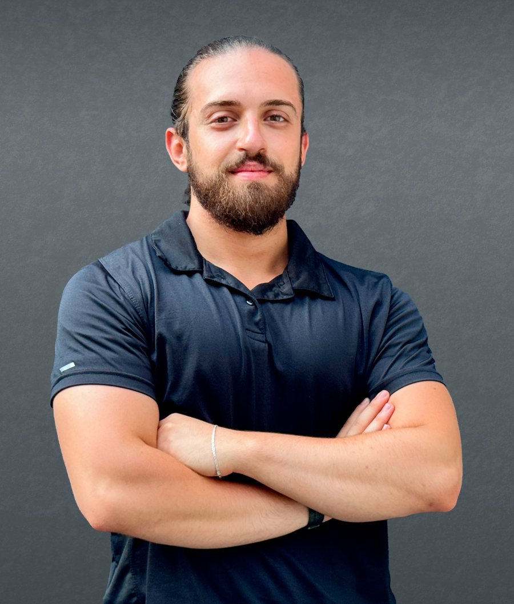

Mohamad Sameh Ranneh
Information & Communication Engineer and humanitarian program manager in Aleppo, Syria. I run programs with UN agency partners and build the data tools that keep them accountable.

About
I studied engineering, then spent my working years in the field: protection teams with the Syrian Arab Red Crescent, health and nutrition coordination, cash assistance, and market research for a WFP project. Today I manage programs and evaluations, and I still write code when a spreadsheet stops being enough.
That mix is the point. I can sit with a community committee in the morning and design the monitoring database in the afternoon.
Experience
- 2026 – present
Program Management, MIDMAR
Programs with UNDP and UN Women: technical evaluations, budgets, partner coordination, and trainings across Syria.
- Mar 2026
Field Coordinator, Al-Hol camp response · Al-Ihsan Association
Team supervision, implementation monitoring, safety of field teams.
- Nov 2025 – present
Field Researcher · Venture (third-party for WFP)
Market monitoring across Aleppo governorate; FGDs, KIIs and surveys with KoboToolbox and ODK.
- 2025
Programs Manager · From Heart to Heart Foundation
Program design, grant management, M&E oversight and risk management.
- 2023 – 2025
Cash Officer and IT Assistant · SSSD
Cash programming support and reporting; systems, networks and data management.
- 2023
Health & Nutrition Field Coordinator · Al-Ihsan Association
Team management, monitoring and stakeholder coordination.
- 2022 – 2023
Team Leader, Social Services & Protection · SARC
Monthly planning, area assessments, data entry and M&E for the Aleppo protection department.
Projects
Face recognition database
Register people with a photo and find them again by picture. Built as a prototype for flagging duplicate registrations in field programs, with data-protection notes.
Damascus Stock Market analysis
Master's project at the Syrian Virtual University analysing market data from the Damascus Securities Exchange.
Data mining coursework
Data mining and machine learning work from the M.Sc. program, including a large vehicles dataset.
Education
- M.Sc. Computer Science — Syrian Virtual University, 2023–2025
- B.Eng. Information & Communication Engineering — Ebla Private University, 2016–2022
Training
- Project Management Professional (PMP) — Sanad
- Managing Projects in Humanitarian Settings — Save the Children
- International Humanitarian Law — ICRC
- Cash remote training — NRC
- GCT & CVA — ZOA
- PSEA and explosive-hazard awareness ToT — UNICEF
- Protection, PSS, GBV and PGI — SARC
- Training of Trainers